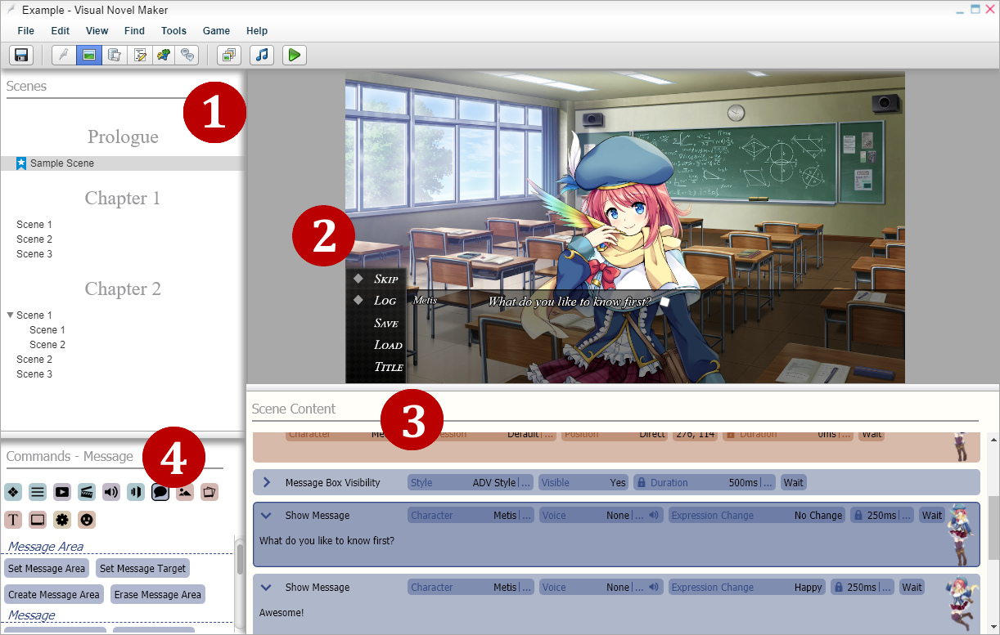
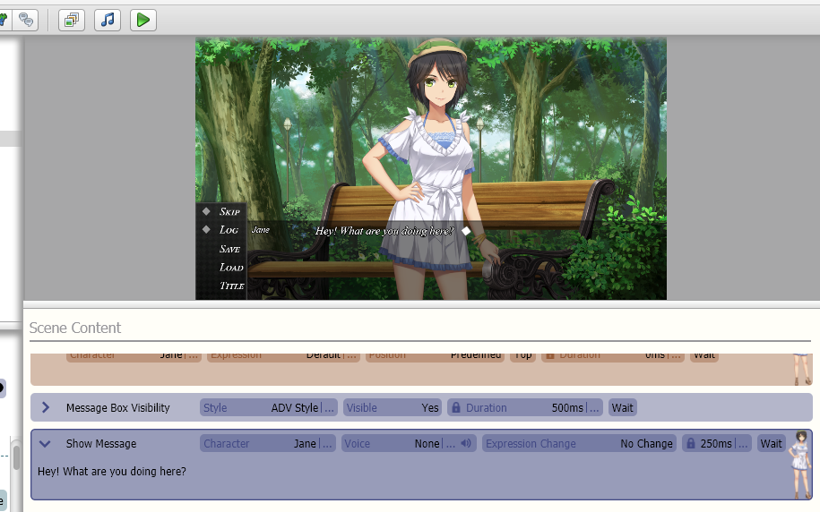
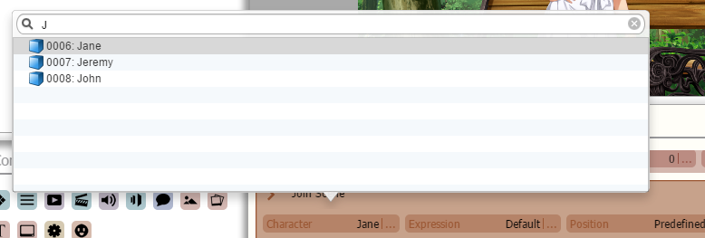
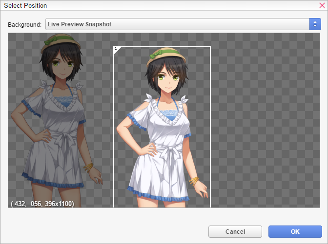
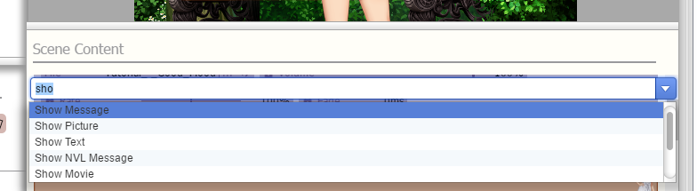

场景
场景编辑器I

n 场景编辑器中，您可以通过将命令拖放到场景内容中，或者仅通过键盘轻松地将场景组合在一起。顶部区域包含实时预览，可准确预览您当前的场景。
1 - 场景
您可以使用章节和场景来组织您的视觉小说。章节 -
可以包含场景。这对于按章节组织场景很有用。场景

这样的命令在实时预览中无效，并且所有音频命令默认情况下都会被静音。在应用程序 首选项中，您可以根据需要配置实时预览或在不需要时将其禁用。如果您打开场景属性从 场景的上下文菜单，您也可以仅为特定场景关闭实时预览。检查菜单栏
，了解如何分离实时预览并将其放在第二个显示器上以获得更多命令空间。
您还可以单击实时预览中的鼠标，它将从选定命令开始正常播放场景，包括计时、等待等。
3 - 场景内容场景的内容。您可以在场景内容命令
页面上阅读有关各个命令的更多信息。
4 - 命令
所有 按类别排序的命令。您可以轻松地将命令拖放到场景中，或使用键盘。有关更多信息，请参见下文。
数据库选择

对于某些 命令，您需要从数据库中选择一个记录/元素，例如字符或字符表达式。
您可以使用顶部的搜索框过滤数据库记录，以便轻松找到并选择所需的记录。按 Tab 键 (
) 可在搜索框和记录选择框之间跳转，反之亦然。在 搜索框中：按 Escape 键 (
) 可清除搜索框内容。再次按下可取消选择。在 记录选择框中：按 Enter/Return 键 (
) 可接受选择。在 记录选择框中：按 Escape 键 (
) 可取消选择。

，可以使用图形编辑器来简化定位。如果图形编辑器窗口对于您的屏幕分辨率来说太大，只需打开应用程序首选项并 取消选中原始尺寸预览
复选框。
组对于某些 游戏对象相关的命令（如显示图片），您可以指定一个组来区分您自己的游戏对象和由扩展创建和管理的 游戏对象。您只需单击“@default
”即可切换到另一个组。您可以 在
共享内容
下了解有关组以及如何通过扩展共享内容的更多信息。

使用键盘您也可以只使用键盘，然后开始 输入您想要添加的命令名称，并且会自动出现一个自动完成框。按 Enter/Return （) 键将匹配的命令添加到场景中。该命令将插入 B.